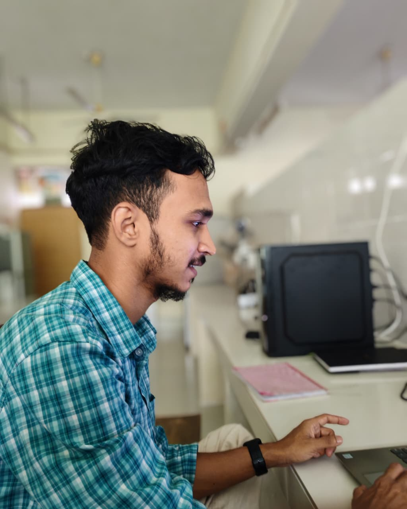

Hi, I'm Sahrier Adil
A Biotech Researcher
I’m someone who’s really curious about the world of science...

Research Experience
- Isolation of enzyme-producing Aspergillus
- Fermentation for amylase production
- Metagenomic analysis of ARGs
- Protein purification in E. coli
Conferences
- Microbial Biotechnology Poster
- Bioinformatics Summit Talk
- CRISPR Congress Participation
- Industrial Biotech Panel
Projects
- Designer cellulosomes
- Salt tolerance in rice
- Hydrolase discovery
- Methane reduction markers
Field Works
- Soil sampling
- Substrate collection
- Microbiome survey
- Farm diversity profiling
Education
- B.Sc. in Biotechnology
- Coursework: Molecular Biology...
- Lab: PCR, assays
- Computational: R, Python
Beyond Academics
- Science communication
- Seminar organizer
- Hackathons
- Blogging